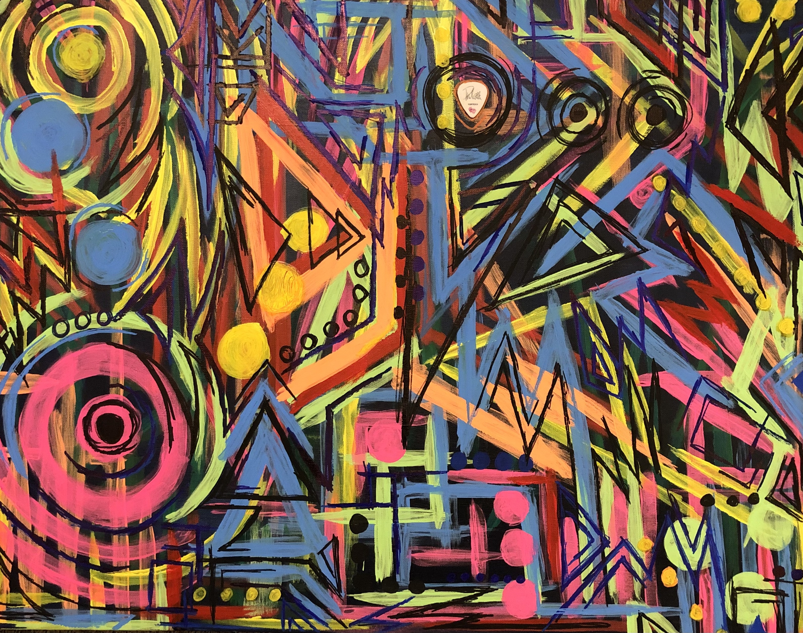

My Paintings
Hysteria
This piece is inspired by Def leppard music. The piece is done in acrylic paint and paint makers. The piece took about 8 hours to complete. The title of the piece is Hysteria, I chose this because not only did the song stick out while making it but is also fitting to the piece's composition overall. The piece is the first one from the series of rock and roll paintings I have done. It was the first because Def Leppard may be my favorite band, I can’t pick which one is truly my favorite. I have seen Def Leppard though twice and it just made sense to do them first. The piece has a guitar pick that I received at the last show when the co-lead guitarist Phil Collen threw it at me after rocking out to Too Late For Love. It was in my wallet for two years till I did this painting and after finishing it I thought the place for the guitar pick was on the canvas. During the making I listened to the band's first five albums. After the first five most bands develop a new sound; I know their original sound and that's what I was going for. It has a lot of neon colors and even glows in black light. I chose these colors as a lot of those first five albums have a lot of electric blues, neon yellows, and neon oranges. Also use of the colors for their font. The band is purely 80's. I wanted to represent what their reign was like in their prime. I achieved such with a loud color palette and harsh geometric mark making.

Girls,Girls,Girls
This piece is inspired by Motley Crue music. The piece is done in acrylic paint and paint makers. The piece in total took about 12 hours to complete. The piece's title is Girls, Girls, Girls. Yes it’s an album and a song of theirs. During the making I once again listened to strictly their first five albums. The bands new sound is not what I normally listen to and did not want it to be a part of the piece. Girls, Girls, Girls is one of my favorite songs from the band; the album I also know like the back of my hand. The colors are inspired from the first five albums, bright red being the main color, with black and white. The marks made are very organic and flowy since the font the band typically uses is cursivei in theif fonts. The marks also symbolize how a lot of their songs are sexuallizing women, the curving and flowing lines to symbolize the curves of a woman. This piece makes a statement just like how the band did. Motley Crue was the most notorious destructive band in the 80’s no one was going to stop them and no one planned to.

Domination
This piece is inspired by Pantera music. The piece is done in acrylic paint and paint markers. The piece in total took about 10 hours to complete. The piece's title is Domination. Can you see the theme yet? They are all titled after one of the band's songs that stuck out to me while making the piece. It was first turn into metal music rather than rock and roll. I wanted the piece to really represent the genre it's in. I got to experiment in lots of ways while creating this piece. It was quite possibly the most fun I had while making anything actually. I dumped paint on my head/hair and headbanged against the piece. I torched it before, during, and after painting. I have a tarp I use to paint with and it simply looked like I may or may not be Dexter. I threw paint on this canvas, literally. Pantera is one of the bands that I started headbanging to at a young age. Not many people my age rock out to them which I think is shameful. The lead guitarist was such an influence within the rock and metal world that his rifts still get used and played after his passing. He influenced bands such as Nickelback. He changed the sound of metal and I just wish more people knew how hard the band rocks out.

Killpop
This piece is inspired by Slipknot music. The piece is my most recent metal piece done in acrylic paint, paint markers, and paper masks. The piece's titled is Killpop. The band is a Metal band but some may say Screamo music. Slipknot and Pantera have two wildly different sounds but both are classified as metal music. Slipknot is much more intense than Pantera. But as the same as Pantera I had a lot of fun creating what you see. I used paper masks, ripped them up and covered them in paint to use on the canvas. The reason being is because the band has 5 or 6 members; all of which wear scary halloween masks of sorts. I wanted to incorporate the masks and in doing so it looks like in some part of my canvas a face is protruding outwards which I love. I also used an unconventional “tool”, the tool in question is a baseball bat with nails sticking out of it. I swear I have only used it for painting. The reasoning being is because in a good amount of their music and videos the band is destroying an object, always destroying something. I thought of the bat but took it to another level. The marks made by this tool I’m in love with. It ripped through parts of the canvas while in some parts only puncturing it. The destruction of the canvas is what makes this a Slipknot piece, wouldn't be the same without it.